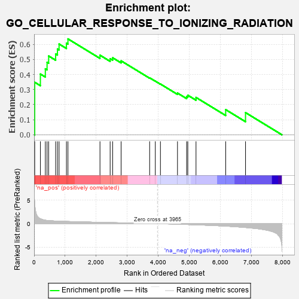
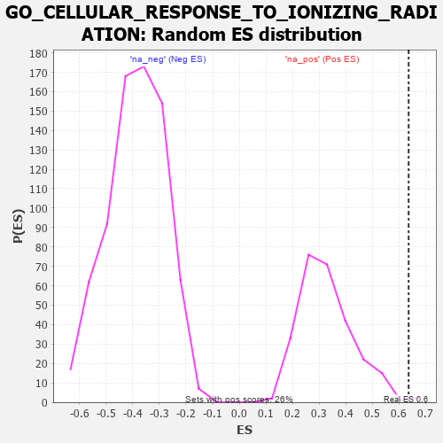

| | | Dataset | 7d |
| Phenotype | NoPhenotypeAvailable |
| Upregulated in class | na_pos |
| GeneSet | GO_CELLULAR_RESPONSE_TO_IONIZING_RADIATION |
| Enrichment Score (ES) | 0.63614786 |
| Normalized Enrichment Score (NES) | 1.9363323 |
| Nominal p-value | 0.007575758 |
| FDR q-value | 0.071420304 |
| FWER p-Value | 0.449 |
Table: GSEA Results Summary

Fig 1: Enrichment plot: GO_CELLULAR_RESPONSE_TO_IONIZING_RADIATION
Profile of the Running ES Score & Positions of GeneSet Members on the Rank Ordered List
| PROBE | GENE SYMBOL | GENE_TITLE | RANK IN GENE LIST | RANK METRIC SCORE | RUNNING ES | CORE ENRICHMENT | | 1 | H2AX | | | 20 | 4.738 | 0.3484 | Yes |
| 2 | SWI5 | | | 203 | 1.045 | 0.4029 | Yes |
| 3 | HUS1 | | | 362 | 0.735 | 0.4374 | Yes |
| 4 | RAD9A | | | 418 | 0.681 | 0.4810 | Yes |
| 5 | WRN | | | 469 | 0.649 | 0.5228 | Yes |
| 6 | XRCC6 | | | 694 | 0.560 | 0.5361 | Yes |
| 7 | ELK1 | | | 752 | 0.545 | 0.5692 | Yes |
| 8 | BLM | | | 804 | 0.531 | 0.6022 | Yes |
| 9 | YAP1 | | | 1041 | 0.475 | 0.6077 | Yes |
| 10 | RAD51 | | | 1090 | 0.466 | 0.6361 | Yes |
| 11 | INO80 | | | 2120 | 0.288 | 0.5280 | No |
| 12 | KDM1A | | | 2447 | 0.237 | 0.5046 | No |
| 13 | RAD1 | | | 2528 | 0.223 | 0.5110 | No |
| 14 | ATR | | | 2800 | 0.183 | 0.4905 | No |
| 15 | HSF1 | | | 3718 | 0.039 | 0.3780 | No |
| 16 | NIPBL | | | 3900 | 0.010 | 0.3560 | No |
| 17 | SFRP2 | | | 4065 | -0.018 | 0.3367 | No |
| 18 | GATA3 | | | 4614 | -0.120 | 0.2767 | No |
| 19 | TLK2 | | | 4909 | -0.179 | 0.2529 | No |
| 20 | XRCC5 | | | 4946 | -0.187 | 0.2623 | No |
| 21 | ATM | | | 5210 | -0.249 | 0.2476 | No |
| 22 | EGR1 | | | 6165 | -0.527 | 0.1666 | No |
| 23 | NET1 | | | 6803 | -0.816 | 0.1469 | No |
Table: GSEA details [plain text format]

Fig 2: GO_CELLULAR_RESPONSE_TO_IONIZING_RADIATION: Random ES distribution
Gene set null distribution of ES for GO_CELLULAR_RESPONSE_TO_IONIZING_RADIATION